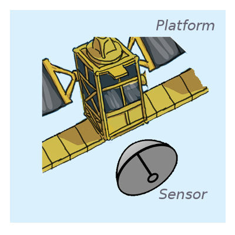
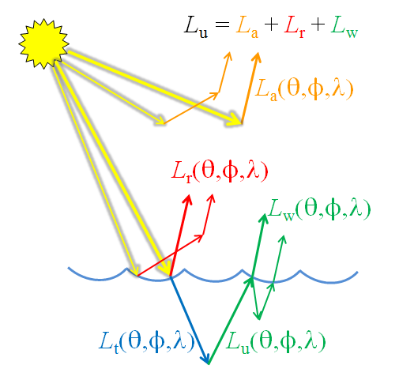
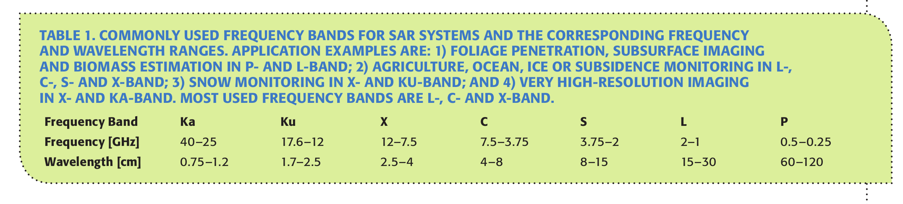
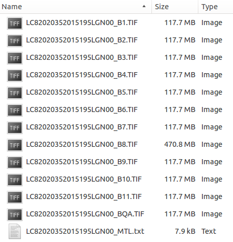
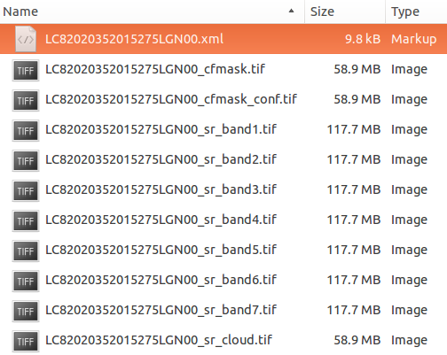

What can Copernicus do for you?
Earth observation to support coastal wetland services
Edward P. Morris (UCA-CEIMAR)
The capacity of light to carry and convey information is perhaps its most important, and remarkable, characteristic.
James Yoder - http://stuffin.space/
https://youtu.be/xcflQZJ5n88
Remote sensing 101
Platform, sensor and resolution
Satellite

Platform
Landsat 8, Sentinel 1A, Sentinel 2A
Sensor or Instrument
Resolution
- Spatial: Pixel size, extent
- Temporal: Revisit time
- Spectral: Band width, Number of bands, Sensitivity
Electromagnetic radiation
Has both wave and particle properties at the same time (wave-particle duality).
- Waves can be described by their amplitude and wavelength
- Polarisation: waves oscillate in more than one orientation
- Photons are the elementary particles of eletromagnetic radiation
- Photons can be interact with matter by scattering and absorption
- Reflectance is scattering in a defined direction

"Electromagneticwave3D" by Lookang many thanks to Fu-Kwun Hwang and author of Easy Java Simulation = Francisco Esquembre - Own work. Licensed under CC BY-SA 3.0 via Commons.
Electromagnetic wave spectrum

"EM spectrum". Licensed under CC BY-SA 3.0 via Commons.
Atmospheric electromagnetic opacity

"Atmospheric electromagnetic opacity" by NASA (original); SVG by Mysid. - Vectorized by User:Mysid in Inkscape, original NASA image from File:Atmospheric electromagnetic transmittance or opacity.jpg.. Licensed under Public Domain via Commons.
Passive visible and infrared

 2015 Creative Commons Attribution license.
2015 Creative Commons Attribution license.
Measures (sun) light
- day-time only*
- radiance (light) passes through atmosphere
- affected by scattering and absorption
- affected by clouds
- requires atmospheric correction procedures
Passive visible and infrared
The surfaces of substances have specific scattering and absorption properties
- allows identification of surfaces (i.e, the blue surface)
- allows quantification of substances (i.e., the number of blue 'rocks')
Red and green light is absorbed, blue reflected.

"Simple reflectance" by User:Phidauex - Own work. Licensed under Public Domain via Commons.
Passive visible and infrared
Water strongly absorbs light giving it a distinctive reflectance spectrum that can be summarised by spectral indices (ratios), e.g., the 'Normalised Difference Water Index' (NDWI, McFeeters et al. 1996).

"Absorption spectrum of liquid water" by Kebes at English Wikipedia. Licensed under CC BY-SA 3.0 via Commons.
NDWI = (NIR - Green)/(NIR + Green)
Passive visible and infrared
All photosynthetic organisms contain chlorophyll giving them a distinctive reflectance spectrum that can be summarised by spectral indices (ratios), e.g., the 'Normalised Difference Vegetation Index' (NDVI).
"Vegetation spectral response" by wiki.landscapetoolbox.org. Licensed under Public Domain via Commons.
NDVI = (NIR - Red)/(NIR + Red)
Passive visible and infrared
The different pigments of photosynthetic organisms result in different 'colours', potentially allowing identification of foreshore vegetation types.
Passive visible and infrared

Passive visible and infrared
Spectral ratios, such as NDWI and NDVI can be used to quantify properties of foreshores.
"Time-ensemble (2000-2015) mean modified normalised difference water index (MNDWI) of Cadiz Bay derived from the Landsat (USGS) archive" by FAST project.
Active radio
Synthetic Aperture Radar (SAR)
- active radio pulses sent and collected
- effective antena size much larger using movement of satellite and clever processing (Synthetic Aperture).
- measures polarised radio waves e.g., horizontal and vertical.
- allows increased spatial resolution.
Active Radio
Synthetic Aperture Radar (SAR)
- most common bands are L, C and X
- different band frequencies are suited to different applications
- penetrating canopies: L and P, very high resolution: X, multi-purpose: C
 "Commonly used frequency bands..." by Moreira et al. 2013.
Active Radio
Surface interactions
- still water tends to be a specular reflector of radio waves i.e, usually low backscatter.
- complex interactions with vegetation result in different return signals.
- buildings often have strong backscatter signal.
- interactions vary with beam polarization i.e., different polarizations provide more information.
Active Radio
Speckle
- caused by the many scatterers in a 'pixel'.
- coherence of the scattered signal results in strong fluctuations across the image.
- 'multi-looking' used to reduce speckle at cost of spatial resolution.
- non-coherent averaging of the intensity image.
- adaptive filtering can also be used to reduce speckle.
Active Radio
Further resources
General:
Passive visible and infrared:
Active radar (SAR):
Copernicus Services
Copernicus Services
Copernicus - Sentinel Online
Copernicus - ESA's Sentinel SciHub
Wetland applications
Copernicus Land Monitoring Services - Wetlands
Wetland applications - Inundation and hydroperiod

- Long-term hydroperiods, turbidity
- NDVI, habitat mapping, invasive species
- Calibration/Validation activities, UAVs
- EcoPotential - H2020 project improving future ecosystem benefits through earth observations
Wetland applications - Inundation and hydroperiod
- C-band SAR
- Specialised terrain based filtering techniques
- Now Sentinel 1 (A+B) available! 6-12 day revist time.
- See special issue on Remote Sensing in Wetlands
Wetland applications - Inundation and Carbon fluxes
Wetland applications - Inundation and Carbon fluxes
Wetland applications - Land types
Wetland applications - Sentinels
Wetland applications - Intertidal elevation
Wetland applications - Impact of vegetation on coastal flood risk
Wetland applications - Impact of vegetation on coastal flood risk
Wetland applications - Impact of vegetation on coastal flood risk
Protype MI-SAFE web-app - http://fast.openearth.eu/
How to access remote sensing data
Data availability
| Name | Abbreviation | Resolution (m) | Availability | Return Interval | Type* | Platform |
|---|---|---|---|---|---|---|
| Landsat Thematic Mapper 5 | L5-TM | 30,60 | 1984 to 2013 | 16 days | M | Satellite |
| Landsat Enhanced Thematic Mapper 7 | L7-ETM | 15,30,60 | 1995 to 2003 | 16 days | P,M | Satellite |
| Moderate-resolution Imaging Spectroradiometer | MODIS | 250,500,1000 | 2000 to present | Daily | M | Satellite |
| Medium Resolution Imaging Spectrometer | ENVISAT-MERIS | 300 | 2002 to present | 3 days | M | Satellite |
| Landsat Data Continuity Mission (Landsat 8) | L8-OLI | 15,30,100 | 2013 to present | 16 days | P,M | Satellite |
| Copernicus Sentinel-1A | S-1A | 4,10,25,40 | 2015 to present | 12 (6) days | R | Satellite |
| Copernicus Sentinel-2A | S-2A | 10,20,60 | 2015 to present | 12 (6) days | M | Satellite |
Data type and format
Landsat Missions Timeline
Data type and format
Landsat product types
Generally surface reflectance products are prefered, however see L8-SR user notes and Landsat Higher Level Science Data Products:
- not completely validated
- not all scenes can be processed: Landsat 8 Pre-WRS-2 scenes (before April 11, 2013), scenes with a solar zenith angle greater than 76°.
- Efficancy of L8SR correction will be likely reduced in: Hyper arid or snow covered regions, Low sun angle conditions, Coastal regions where land area is small relative to adjacent water, Areas with extensive cloud contamination.
- High latitudes (> 65º) may not be valid.
Data format and type
Landsat Standard L1 products
- Standard Terrain Correction (Level 1T -precision and terrain correction) if possible.
- Cubic Convolution (CC) resampling method.
- 30-meter (TM, ETM+, OLI) and 60-meter (MSS) pixel size (reflective bands).
- Universal Transverse Mercator (UTM) map projection (Polar Stereographic projection for scenes with a center latitude greater than or equal to -63.0 degrees).
- World Geodetic System (WGS) 84 datum.
- MAP (North-up) image orientation.
- GeoTIFF per band, quality assement + metadata (
.MTL)

Data format and type
Landsat Higher Level Science Data products
- surface reflectance
- includes basic classification (water, cloud) and per pixel quality mask
- metadata is .xml (schema: http://espa.cr.usgs.gov/v1.2)
- surface reflectance spectral indices
- transport format as standard GeoTIFF or ENVI binary or HDF-EOS2, see guide

Data type and format
Sentinels Timeline
Data type and format
Sentinel 1 product types

{kind=link}
{kind=link}
{kind=link}
Data type and format
Sentinel 1 product format
The SENTINEL-SAFE format wraps a folder containing image data in a binary data format and product metadata in XML.
Data type and format
Sentinel 2 product types
Data type and format
Sentinel 2 product format
The SENTINEL-SAFE format wraps a folder containing image data in a binary data format and product metadata in XML.
Earth Explorer
- official bulk dissemination system for the Landsat (and other) products.
- requires registration (quick and easy); email address used to send download links!
- no restrictions on data use but requested to acknowledge source:
- USGS Products: 'Data available from the U.S. Geological Survey.'
- NASA LP DAAC Products: 'These data are distributed by the Land Processes Distributed Active Archive Center (LP DAAC), located at USGS/EROS, Sioux Falls, SD. http://lpdaac.usgs.gov'
- surface reflectance products generated 'on demand'.
Sentinel Scientific Data Hub
- official bulk dissemination system for the Sentinels products
- requires registration (quick and easy)
- use of data implies acceptance of Terms and Conditions of the use and distribution of Sentinel data
- no limitations but must attribute 'Copernicus Sentinel data [Year]' or 'Contains modified Copernicus Sentinel data [Year]'
Other examples of how to get the data
General:
- Google Earth Engine (GEE); Landsat archive, Sentinel-1 (available late 2015?), MODIS, MERRIS, ect. Sentinel-2 (planned).
- Google Storage also mirrors much of these archives. You can install their “gsutil” (free) and then list this directory, which is indexed by sensor (for example, L8 is Landsat 8) and path/row:
gsutil ls gs://earthengine-public/landsat/ - Note Sentinel-1 has undergone further pre-processing in GEE
- Google Storage also mirrors much of these archives. You can install their “gsutil” (free) and then list this directory, which is indexed by sensor (for example, L8 is Landsat 8) and path/row:
Sentinels:
- Sentinel Data Access Service (SEDAS); useful portal by UK Space Agency
Other examples of how to get the data
Landsat:
- USGS Earth Resources Observation and Science (EROS) Center Science Processing Architecture (ESPA) On Demand Interface for higher level products and processing options
- Landsat Look for quick looks and standard data
- GloVis an alternative to EarthExplorer
- Python Landsat-Download
- Python Landsat-util
Via commandline using curl:
# download a specific sentinel product
S:\>curl -u User:Password -JO "https://scihub.esa.int/dhus/odata/v1/\
Products('b94d872a-ef4f-4117-8a6b-1a90466ae785')/$value"
How to extract information
Basic concepts
Georectification: Mapping the data to real world coordinates.
Calibration: Converting the data to real world units
- at-instrument; instrument-specific digital numbers to units , i.e., radiance
- top-of-atmosphere; accounting for platform to target geometry.
- surface; removing atmospheric affects and corrections for topography
Morphological operations: Filtering, changing resolution, ect.
Course classification: Assigning different classes (e.g., clouds, shadows, water) using segmentation or clustering.
Open source image processing (some options)
with GUI:
- Sentinel Application Platform (SNAP); official software for processing sentinel data, integrates NEST and BEAM.
- Quantum GIS (QGIS); extensible GIS system with many plugins linking to image processing packages (BEAM plugin).
- BEAM
- SeaDas
- Monteverdi2
- GRASS
Packages and frameworks:
- Google Earth Engine; JavaScript and Python
- Orpheo Toolbox (OTB); C
- RSGISLib; Python
- OpenCV; C, Python
- raster; R
Sentinel Application Platform (SNAP)
A common architecture for all Sentinel Toolboxes
- open-source (Java) available at GitHub or precompiled at STEP.
- successor of the mature BEAM + NEST software.
- efficient parralization of calculations resulting in good performance on modern PCs.
- Python bindings available soon?
- Sensor specific toolboxes (Sentinels, but also many other sensors).
- Developed by Array Systems and DLR (S-1), C-S (S-2) and Brockmann Consult (S-3) for ESA.
Sentinel Application Platform (SNAP)
Getting help
- Detailed in built help
- Toolbox tutorials, also consider NEST and BEAM tutorials.
- SNAP forum; a shared user experience
- SNAP development; how to contribute
The power of the Graph Builder and Graph Processing Tool (GPT)
- graphical building of workflows [graphs]
- save workflows in XML and share
- apply to single image or batch process many images
- run from within the GUI or the command line (GPT)
ESA Research and Service Support (RSS)
'RSS has the mission to support the Earth Observation (EO) comunity in exploiting EO data'
- supports institutions, scientists and developers.
- supports data provisioning, access and processing.
- help to scale up workflows
- computation on demand and cloud computing service free for 'non-profit' organisations.
- contact rss_team@esa.int to check conditions and egibility.
Acknowledgents
 The research leading to these results has received funding from the European Union Seventh Framework Programme (FP7/2007-2013) under grant agreement n° 607131. All views presented are those of the author’s, the European Union is not liable for any use that may be made of the information contained therein.
The research leading to these results has received funding from the European Union Seventh Framework Programme (FP7/2007-2013) under grant agreement n° 607131. All views presented are those of the author’s, the European Union is not liable for any use that may be made of the information contained therein.
- The FAST project team for support and contributions.
- Landsat data courtesy of USGS.
- This presentation includes Copernicus Sentinel data 2015.
- Videos from ESA YouTube channels.
- 'Stuff in Space' by James Yoder.
- Comic design and production; The Pilot Dog
- Slide deck made using slidify
Find out more about FAST
Get this talk: